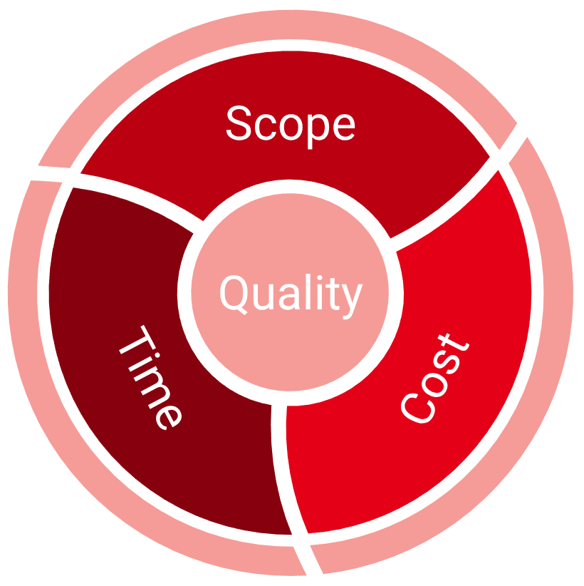
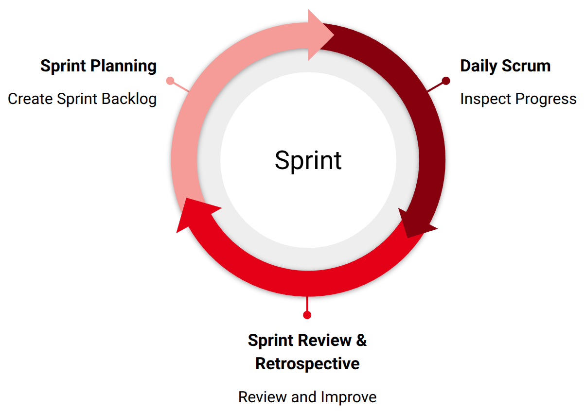

A project is a temporary initiative designed to create a specific product or service. It has defined start and end points and follows a path of progressive elaboration—beginning with a broad concept that becomes more detailed over time. For example, building a house might begin with a general vision and gradually develop into detailed plans for each component. Projects differ from operations which involve ongoing and repetitive activities like manufacturing or routine construction. They also differ from processes which are established sequences of actions—such as quality control—that produce consistent results. A group of related projects is called a program, while a portfolio consists of multiple projects or programs that may not be directly related but collectively support an organization's overall strategic objectives.
Project management revolves around four key elements: identifying project requirements, setting clear project objectives, engaging stakeholders, and balancing constraints. Central to this is the triple constraint or iron triangle of project management which includes time, scope, and cost. A project is at risk of failure if any of these three elements becomes misaligned with the others.

The project life cycle outlines the stages a project goes through from initiation to completion. Projects typically follow one of two main life cycle models. The predictive life cycle follows a structured, sequential approach—often called the waterfall model—where each phase must be completed before the next begins. A common example is house construction, which proceeds through clearly defined stages, each requiring specific skills and resources. In predictive project models, the process typically moves through distinct phases: initiation, planning, execution, monitoring and control, and finally, closure. The goal of the closure phase is to secure formal approval of the final deliverables.
In contrast, the adaptive life cycle, also known as agile, begins with defining an approved scope and then develops deliverables through iterative or incremental processes. For example, building a website may start with a basic framework, with additional features and refinements added over time. Similarly, educational software might gradually introduce new functionalities in stages. In adaptive project management, change is anticipated and embraced as a natural part of the process. In contrast, predictive approaches generally resist change, since the project is planned in detail from the outset. In predictive models, changes must be submitted through formal change requests that modify specific project elements. In adaptive projects, however, changes are integrated into the evolving list of requirements throughout the project. In both models, changes are carefully documented, refined, and evaluated before acceptance—they are never adopted automatically.
Hybrid approaches combine elements of both models. A project might begin with a predictive plan using waterfall techniques and then adopt agile practices during execution, or it could start with agile prioritization and shift toward a more fixed, change-resistant plan.
In predictive project management, progress is measured by reaching key milestones. For example, completing the design phase when building a house. In adaptive approaches, progress is guided by a product roadmap rather than fixed milestones. This roadmap outlines what the project aims to achieve, aligning with company goals, vision, and business value. It serves as a high-level plan showing the path from start to finish, including interim deliverables and potential release schedules.
All agile projects progress through iterations or increments. Iterations—often called sprints—are time-boxed cycles that build upon previous work, continuously refining and enhancing the overall product. While each iteration contributes to development, not all result in deliverables that are ready for customer release. An increment refers to a usable segment of the product, developed over multiple sprints, that represents a potentially shippable portion of the final solution. Each new increment adds functionality to those delivered previously, gradually building the complete product. In agile projects, some requirements are too large to be completed within a single iteration—these are called epics. Epics represent substantial features or goals that are broken down into smaller, manageable user stories.
Projects formally begin with a project charter, a document that authorizes the project and outlines its purpose. Charters are created to ensure the project responds to a specific driver such as market demand or customer requests. They often include a vision statement, cost-benefit analysis to demonstrate the project's value and feasibility. A project charter addresses what the project is, why it exists and when it starts and ends.
There are several commonly used agile approaches including Scrum, Kanban, Lean, and XP or extreme programming. There are also some less common methods such as feature-driven development, dynamic systems development method, and crystal agile, which will not be discussed here.
Scrum is probably the most common agile method. It is mainly based on empiricism and using triangulation. It works through iterations called sprint which are repeated to add increments until the project is completed. Scrum is explained in more detail in the next section.
Kanban is mainly based on transparency and flow. Kanban visualizes the project tasks in small pieces that flow through a system called Kanban board. A commitment point is when a task is moved into the workflow. A delivery point is when the task has passed through all of the columns of the board and is completed.
Lean focuses on minimizing waste and maximizing efficiency by doing more with less—fewer resources, less effort, reduced costs, and shorter timelines. It emphasizes simplicity, often through developing a Minimum Viable Product or MVP, and embraces Kaizen, or continuous incremental improvement. Lean promotes a smooth workflow using tools like Kanban, while encouraging self-managed and cross-functional teams. Its goal is to get the product right the first time by leveraging small iterations, prototyping, and open communication with customers. Learning and improvement are ongoing, driven by regular feedback.
XP centers on practices like pair programming and test-first development, where automated tests are written before the code to ensure reliability. XP relies on short planning and feedback cycles throughout its process. It is built on five core values: communication, feedback, failing early, failing fast, and experimentation. In pair programming, two developers—one acting as the driver writing code and the other as the navigator reviewing and guiding—regularly switch roles, often every few hours.
Scrum provides a framework for agile management of complex projects. It is characterized by Scrum values of focus, openness, respect, courage, commitment and the empirical pillars of transparency, inspection, and adaptation. Scrum is implemented by a set of well-defined events, roles, and artifacts which are explained below.
The main event in Scrum is sprint which is a container for all other events. The sprint starts with a sprint planning event where the team plans what they want to accomplish in the sprint. The developers meet everyday in the daily scrum to discuss the progress and challenges. At the end of the sprint, the team meets in the sprint review meeting to demonstrate their accomplishment and get feedback. The sprint ends with a sprint retrospective meeting to discuss the efficiency of the sprint and possible improvements.

There are three main roles in a scrum team. The product owner, the developers and the scrum master. The product owner is responsible for maximizing the value of the product the team creates. The developers create the product and the scrum master who establishes Scrum and ensures its effectiveness.
The scrum team delivers value through three artifacts which are product backlog, sprint backlog and increment. The product backlog contains the product backlog items, which are user stories that need to be done, and the product goal. It is created and maintained by the product owner before the first sprint starts. The sprint backlog contains the sprint goal, the product backlog items that need to be done in the sprint, and the action plan which is typically a breakdown of the product items into a set of tasks. The increment is the set of accomplished product backlog items, which have met the predefined quality standards known as definition of done.
Agile is a mindset designed to manage complex projects through adaptable, iterative approaches. In software development, agile project management is guided by shared principles outlined in the Manifesto for Agile Software Development, which focuses on delivering valuable software that meets customer needs. Progress is primarily measured by working software. Agile embraces changing requirements, even in late stages, and emphasizes early and frequent delivery—typically within weeks to a few months.
Agile promotes empirical processes, encouraging teams to experiment and innovate. A common Agile principle is to "fail early and fail fast," fostering learning and improvement. Teams are viewed as valuable assets, not costs. Leaders adopting an Agile mindset act as coaches and facilitators rather than commanders. Agile also thrives on active stakeholder participation, relying on their vision, guidance, and continued engagement to define project success.
Agile teams are self-organizing, motivated, and trusted to get the job done. Daily collaboration between business stakeholders and developers is key, often through face-to-face communication. Teams are provided with the right environment and support, and they regularly reflect on their processes to continuously improve effectiveness.
[1] K. Schwaber, J. Sutherland, The Scrum Guide , 2020.
[2] K. Beck et al., Manifesto for Agile Software Development , 2001.
[3] J. Phillips, Project Management Professional, McGraw Hill, 2021.
soranjh.github.io